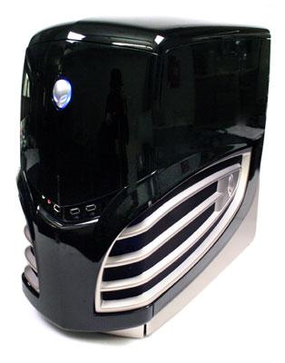
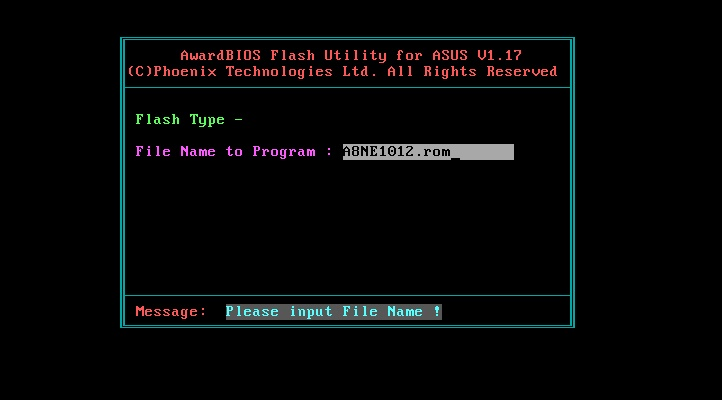

The problem
I have a very old (legacy 7500) Alienware Area-51 that looks like:

I wanted to keep the motherboard and cheaply upgrade the processor from some Intel Core 2 Duo to the Intel Core2 Quad Q5550. Despite the Q550 being from the same era (2007-2008), the motherboard would POST but freeze on the BIOS load screen. Flashing the motherboard with a new BIOS was the key to a now successfully, and cheaply, upgraded legacy Alienware Area-51.
This post will summarize my findings and process for flashing the Alienware Area-51 motherboard from its old BIOS to the EVGA 680i SLI Motherboard p33 BIOS update
Identifying the motherboard.
When I used software utilities to identify the motherboard on my old Alienware Area-51, I found that the make and model came up as “alienware alienware”. This is totally useless. What Alienware did was slightly modify a motherboard produced by another company and hid the true name of the motherboard. The true name is a series of characters printed on a label on the physical motherboard, which for me was “122-ck-nf68-b1”. Thanks to this post and this post, the real name for the motherboard is EVGA 680i SLI Motherboard.
Alienware, way back in 2007, stopped producing BIOS updates for this motherboard. Thankfully, they modified the motherboard so little that a more generic update intended for the base model should work. Following the instructions on the above two posts, as well as this one, was a huge help. Below is my own method for successfully flashing my 122-ck-nf68-b1 motherboard.
Instructions for flashing the “alienware alienware” motherboard.
Since Alienware changed the name of its motherboard to “alienware alienware”, attempting to run a generic BIOS update (just running a .exe, basically) will not work. I needed to force the BIOS update by using a flash utility.
Potential problems:
BIOS Flashing is notoriously finicking, and seemingly minor differences in motherboard specifications can cause your computer to become useless. It is critical that you ensure you have either the 122-CK-NF68- or 122-CK-NF63- (EVGA 680i SLI and LT) motherboard before proceeding. Check for paper labels on your motherboard with these id numbers.
If you somehow do get a computer that won’t start (which only has the potential for happening if you do not have the motherboard with those id numbers), the worst that will happen is spending $30 and a bunch of time trying to replace the BIOS chip on your computer. On the plus side, you can order a BIOS chip that is flashed with the BIOS update you want and it will work
Setup:
- I have read that if you have weird voltages set on your computer from overclocking, reset those.
Tools:
- The generic BIOS update .bin file. Download the .bin file, not the .iso or other file formats. Be sure to find the latest version. I used update p33.
- awdflash.exe. I downloaded the latest version (899). Their are other utilities for flashing different BIOS manufacturers motherboards, however I read somewhere that Award (awd) owns Pheonix so using the awd flash utility will work for the legacy Alienware Area-51.
- A flash drive.
Method:
1) Clear the flash drive of everything. Show hidden folders and delete those as well.
2) Put the .bin file and awdflash.exe on the flash drive.
3) Rename the .bin file to something easy to type and remember, like bios.bin.
4) Restart your computer and press whatever key combination allows you to select the boot device.
5) Boot from the flash drive.
6) In the terminal prompt that should appear, type awdflash.exe or whatever the name of the flash utility is. (Note: at this point I wanted to be very sure of the name of the flash utility, so I just restarted my computer. My computer was fine. I imagine at any point you may restart except for after step 8.)
7) In the prompt that now exists with AWARD as the prefix, type awdflash bios.bin /py /sn /f /cc /r. Replace bios.bin with your .bin file name. Here are what the switches (e.g. /py) are telling the flash utility to do.
8) You will be greeted by something like this screenshot:

Type in the correct name of the .bin file and press enter.
Beeps are normal.
9) At this point my computer restarted once or twice and then everything was fine. So I swapped out the processors and was greeted by a computer that worked!